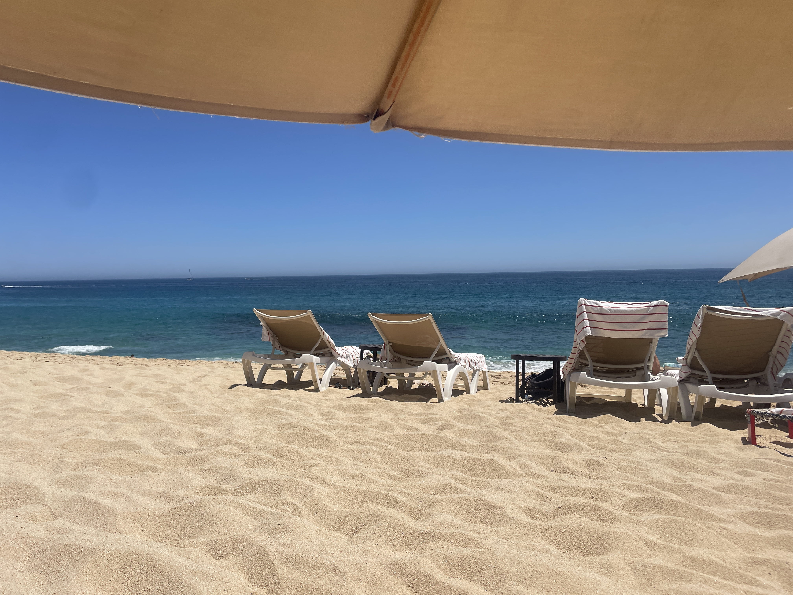
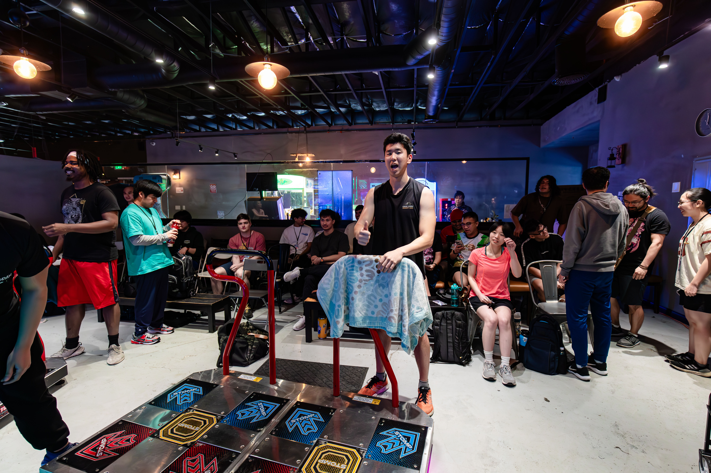

|
Blog Post
Date posted: July 29th, 2025
|
 |
Good things happened.
I went to Mexico during spring break. Played Pump.
The trip went great. I think it was a great relaxation break, but the issue is that we had to cook food for ourselves to save money.
The beach was definitely cleaner and nicer than SD beaches.
As in, there were no beach residue in the sand nor the water. The sun felt nice.
Although I relaxed well, I can definitely relax better at home. My desires for international travel wilts further.
|
|
 |
Came back to America, then played in a Pump tournament, met a lot of cool people.
I played in the lower division, then got knocked out pretty early.
Most of the competitors were casual players who had rhythm game backgrounds, so I couldn't compete in scoring.
But know, I would say that I'm officially good at the game now (no longer a noob!).
In every universe, I would choose my current state of athleticism rather than rhythm game sense.
Spring quarter was very chill. I took ECE 272A, 273, 275A (all of which were free), and MATH 216C, 240C.
I also had to do research with professor Nikolay Atanasov.
I got to hang out a lot of J.B. We basically went to Round1 twice a week.
There was one particular day where I stayed at Round1 from 10 AM to 2 AM the next day. Thanks to F.C. for that.
There was a DRGC pool party. Was very fun.
And that's pretty much it.
|
|
|
Done with coursework. Walked at Masters graduation. Got sunburnt. Went to AX. Had fun.
I landed a 6 month Co-Op at Audi. I thought that I flunked all of the interviews, but somehow I got picked.
I suspect it was my enthusiastic yet eloquent speech that emitted pure confidence and competence (when in reality I was not technically competent at all!).
But I probably got chosen for a reason, so I'm going to try my best to make the biggest impact.
It's a really nice to be recognized for my efforts.
I was worried about breaking into industry because I never mindlesly grinded leetcode problems, which I always found entirely pointless.
It is very nice to be win at a game with an original strategy.
The last thing I wanted to do was to go against my own philosophy of pursuing a career.
Contradiction is my greatest fear.
Anyways, I am now back at home, and I have successfully fixed my sleep schedule. I consisntely sleep before 12. Wake up around 9.
I have to be at work by 8 AM on the first day (bruh). Good thing I started working on my sleep schedule early.
Been consistenly hitting the gym and getting cardio in (either run, bike, or swim).
I got back into playing League again, but it's definitely on a healthier note. I don't feel any urges to play.
In fact, I don't feel to need to play games at all. I feel like I am progressing.
|
On a different note, I have learned about the plight of particular individuals who had their moralities tested in extreme situations.
The boundary between rational thought and emotion became more convoluded.
I silently judge everyone but always wonder if I will stick true to my values if I were in those positions.
I wrote strong opinions towards the students and administration of UCSD, but I chose to omit them.
I believe that I am no longer in the position to make general advice.
“When writing up a proof, I only use three words: ”obviously,“ ”evidently,“ and ”naturally“ — isn't everything self-evident anyway?” - The Herta
|